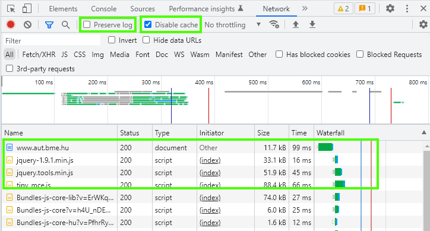
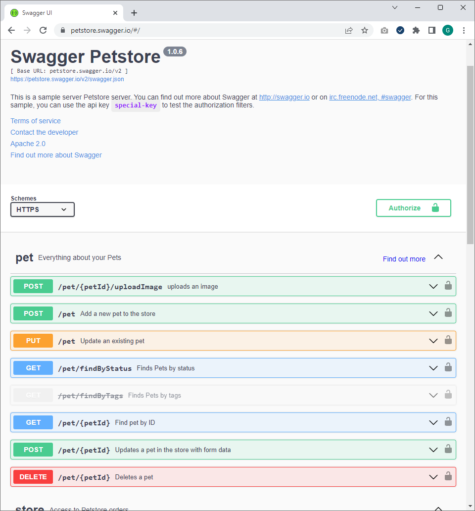
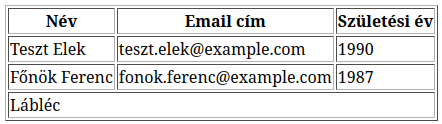

Labor 08 - HTTP, HTML¶
Bevezetés¶
A labor során laborvezetői segítséggel, majd önállóan készítesz el feladatokat a webes technológiák gyakorlati megismerése érdekében.
A labor célja, a böngésző fejlesztői eszközeinek (dev toolbar) megismerése, a HTTP kérések és válaszok vizsgálata, valamint HTML oldalak készítésének gyakorlása.
Félév során használt eszközök¶
- Webböngésző (Chrome, Edge vagy Firefox) és a beépített hibakereső eszközei,
- Visual Studio Code kódszerkesztő alkalmazás,
- otthoni vagy egyéni munkavégzéshez használható bármilyen más kódszerkesztő vagy fejlesztőkörnyezet, de a laborokban a VS Code-ot használjuk.
- A laborban előre telepítésre kerültek az alábbi kiegészítők a VS Code-hoz,
- C# - C# és .NET Core támogatás.
- Live Server - egy nagyon egyszerű, fejlesztési célra szánt HTTP kiszolgáló.
- Live Saas Compiler - SCSS fájlokból CSS-t tud generálni.
- ESLint - Statikus kódelemző JS-hez.
- IntelliSense for Css class names in HTML - CSS osztály nevekhez automatikus kiegészítés.
- npm, a NodeJS csomagkezelője,
- Az npm parancs futtatásához telepített NodeJS-re is szükség van.
Előkészület¶
A feladatok megoldása során ne felejtsd el követni a feladat beadás folyamatát GitHub.
Git repository létrehozása és letöltése¶
- Moodle-ben keresd meg a laborhoz tartozó meghívó URL-jét és annak segítségével hozd létre a saját repository-dat.
- Várd meg, míg elkészül a repository, majd checkout-old ki.
- Egyetemi laborokban, ha a checkout során nem kér a rendszer felhasználónevet és jelszót, és nem sikerül a checkout, akkor valószínűleg a gépen korábban megjegyzett felhasználónévvel próbálkozott a rendszer. Először töröld ki a mentett belépési adatokat (lásd itt), és próbáld újra.
- Hozz létre egy új ágat
megoldasnéven, és ezen az ágon dolgozz. - A neptun.txt fájlba írd bele a Neptun kódodat. A fájlban semmi más ne szerepeljen, csak egyetlen sorban a Neptun kód 6 karaktere.
Böngésző hibakereső eszközei¶
Weboldalak készítésekor szükség lehet a HTTP forgalom megvizsgálására, viszont az esetek jelentős részében elegendő lehet, ha a böngésző forgalmát meg tudjuk vizsgálni. A mai böngészők mindegyike tartalmaz eszközöket, amellyel a weboldalak hibakeresése nagyon egyszerűen kezelhetővé válik.
Nyissuk meg a laborvezető által kijelölt böngészőben a https://www.bme.hu oldalt, majd nyissuk meg a Developer tools nézetét az F12 billentyűvel.
Vizsgáljuk meg, mit kínálnak az egyes böngészőkbe épített hibakereső eszközök!

További böngészőkben található Dev Toolbarok


A Chrome, Edge és Firefox böngészők eszközkészlete kisebb eltérésektől eltekintve megegyezik, a leggyakoribb funkciók az alábbiak:
- A dokkolás módja megadható: az ablak alsó részére vagy oldalára is (Chrome, Firefox) dokkolható az eszköztár, ill. kivehető a saját ablakába.
- DOM vizsgálata (DOM Explorer, Elements, Inspector): a dokumentumfa felépítését tudjuk megvizsgálni, látható a kirajzolt HTML tartalom. Lehetőségünk van szerkeszteni az elemeket, beszúrni attribútumokat, elemeket, törölni őket. Kiválasztható egy DOM elem egérrel a kirajzolt oldalon vagy a szöveges megjelenítőben is. Egy elemet kiválasztva jobb oldalon az elemre illeszkedő stíluslap-szabályok (CSS) láthatók, ezek is szerkeszthetők. CSS készítésekor egy nagyon hasznos eszköz.
- JavaScript konzol (Console): a JavaScript standard outputja a konzol, az alkalmazások által írt tartalmak itt láthatók. Lehetőségünk van kód futtatására is a konzol ablakban, ami azonnal kiértékelődik.
- Források (Sources): Itt látható, hogy a teljes weboldal betöltéséhez honnan és mit töltött le a böngésző. Ha itt kiválasztunk egy JS fájlt, akkor annak a teljes kódját láthatjuk, sőt töréspontokat is tehetünk bele, így lehetővé téve a JS fájlok debuggolását.
- Hálózat (Network): itt láthatjuk a kimenő kéréseket és a rájuk érkező válaszokat. Előnye, hogy csak a konkrét oldalhoz tartozik, nem a teljes böngészőhöz, így könnyebb leszűrnünk, melyik kérések tartoznak melyik alkalmazáshoz/oldalhoz. Láthatók a pontos időzítések is, HTTP kérések indítását viszont nem lehetséges kézzel megejtenünk a beépített lehetőségekkel.
- Teljesítménymérők (Performance): különböző teljesítménymérő eszközök állnak rendelkezésünkre a weboldalak elemzéséhez, amik jellemzően a memória- és processzorhasználatot mérik.
- Alkalmazás (Application): az alkalmazás által a különböző tárolókban - Local Storage, Session Storage, Cookies, ... - tárolt kulcs-érték párokat tudjuk megtekinteni.
Az eszközök legalább alapszintű ismerete (elsősorban a DOM Explorer, Console és Network használata) a laborokon elengedhetetlen.
1. Feladat¶
HTTP kérések¶
A hálózati kéréseket csak akkor rögzíti a Network fül, ha a Dev Toolbart korábban nyitjuk meg, minthogy az oldalt betöltenénk. Az alábbi ábrán látható, hogy milyen funkciókat és beállításokat rejt a hálózat fül.

Disable cache: bekapcsolása nagyon fontos JS és HTML kód debuggolása során, ugyanis a böngészők elég agresszívan gyorsítotárazzák ezeket a kéréseket. Fontos azonban tudni, hogy a gyorsítótár csak addig van letiltva amíg a Dev Toolban meg van nyitva és csak arra az egy oldalra (fülre) vonatkozik.
Preserve log: bekapcsolásával lehetőségünk van a logok megőrzésére navigációkor is. Azonban ezt a pipát óvatosan használjuk, mert a sok log nagyon be tudja lassítani a böngészőt.
Közös feladat¶
- Nyissuk meg a böngészőben a https://www.aut.bme.hu oldalt úgy, hogy a Dev Toolbar Network füle már meg van nyitva.
- Keressük meg és kattintsunk arra a kérésre, amiben a HTML tartalom letöltődik.
-
A megjelenő ablakban láthatók a HTTP kérés fejlécei
- General: A legfontosabb adatokat láthatjuk itt a kérésről és a válaszról.
- Request URL: https://www.aut.bme.hu/
- HTTP Method: GET
- Status Code: 200
- Response Headers: Itt találjuk a HTTP válasz fejléceit. Alapértelmezés szerint egy feldolgozott formában látjuk az adatokat, viszont a View Source gombra kattintva meg tudjuk nézni a nyers adatokat is.
- Request Headers: Itt találjuk a HTTP kérés fejléc mezőit. Alapértelmezés szerint egy feldolgozott formában látjuk az adatokat, viszont a View Source gombra kattintva meg tudjuk nézni a nyers adatokat is.

HTTP kérés-válaszok fejlécei Hogyan másoljuk ki egy kéréshez tartozó fejléc adatokat
A kérésen kattints jobb egérgombbal majd ott válaszd a Copy menüpontból, hogy mit szeretnénk másolni.

HTTP kérés-válaszok fejlécek másolása - General: A legfontosabb adatokat láthatjuk itt a kérésről és a válaszról.
-
Nézzük meg, hogy milyen HTTP kérés ment ki az oldal letöltéséhez.
GET / HTTP/1.1 Accept: text/html,application/xhtml+xml,application/xml;q=0.9,image/avif,image/webp,image/apng,*/*;q=0.8,application/signed-exchange;v=b3;q=0.9 Accept-Encoding: gzip, deflate, br Accept-Language: hu-HU,hu;q=0.9,en-US;q=0.8,en;q=0.7 Host: www.aut.bme.hu User-Agent: Mozilla/5.0 (Windows NT 10.0; Win64; x64) AppleWebKit/537.36 (KHTML, like Gecko) Chrome/106.0.0.0 Safari/537.36 - Nézzük meg a kérésre kapott választ.
HTTP/1.1 200 OK Cache-Control: no-cache, no-store Pragma: no-cache Content-Type: text/html; charset=utf-8 Content-Encoding: gzip Expires: -1 Vary: Accept-Encoding Server: Microsoft-IIS/8.0 X-AspNet-Version: 4.0.30319 X-Powered-By: ASP.NET X-Frame-Options: deny Date: Mon, 03 Oct 2022 05:54:57 GMT Content-Length: 11344
Info
Ha még nem tetted volna meg, nyisd meg a GitHub Classroom leklónozott beadandójának repositoryját, aminek gyökér könyvtárát nyisd meg a VS Code szerkesztőben! A index.html fájlban dolgozzunk és a megoldas ágra pusholjunk.
Önálló feladat beadandó¶
1. feladat beadandó (0.5 pont)
- Nyisd meg a böngészőben a http://www.aut.bme.hu oldalt. HTTP kérés nem HTTPS
- Keresd meg az azt a kérést, ami a http://www.aut.bme.hu -ra érkezett és vizsgáld meg a kapott HTTP választ.
- Készíts képernyőképet a Dev Toolbar Network füléről ahol látszódnak a kérés fejlécei. (General, Request Headers, Response Headers)
- A készített képernyőképet másold be
f1.pngnéven a repository gyökerébe!
2. Feladat¶
Postman¶
Postman segítségével egyszerűen tudunk HTTP kéréseket indítani és a kapott válaszokat vizsgálni. Leggyakrabban akkor használjuk ha egy REST API-t kell kipróbálni vagy tesztelni.
Webes és desktopos verzió is létezik belőle.
- A webes felület regisztráció után használható a https://www.postman.com/ oldalon.
- Az asztali verziót a https://www.postman.com/downloads/ oldalról lehet letölteni.
A labor gépekre az asztali verzió fel van telepítve, így azt fogjuk használni. Ahhoz, hogy ne kelljen szerver oldali kódot készíteni egy tesztelésre kiadott REST API-t használunk melynek leírása a https://petstore.swagger.io/ oldalon érhető el. A legfontosabb végpontok az alábbi swagger ábrán is látható.

Keresés státusz alapján¶
- Indítsuk el a Postmant.
- Bal oldalon hozzunk létre egy új kategóriát és nevezzük át MobWeb-re.
- Állítsunk össze egy kérést, ami státusz alapján kérdez le kutyákat. A leírása a swagger oldalon található. (Akár onnan is ki lehet próbálni.)
- Method: GET
- URL: https://petstore.swagger.io/v2/pet/findByStatus
- Query paramétert a Params fülön tudunk felvenni (vagy beírhatjuk az URL-be is)
- Key: status
- Value: sold
- Küldjük el a kérést a Send gombra kattintva és ellenőrizzük a visszakapott adatokat.
- Mentsük el a jobb felső sarokban lévő Save gombbal a MobWeb kategóriába.

Új elem létrehozása¶
- Állítsunk össze egy új kérést, ami egy kutyát hoz létre. Ehhez a /pet URL-re kell egy POST kérést küldeni a Body -ban megadva azt a JSON-t amivel létre kell hozni a kutyát. A pontos leírás a swagger oldalon érhető el.
- Method: POST
- URL: https://petstore.swagger.io/v2/pet
- Válasszuk ki a Body fület, ott a raw opciót és adjuk meg hogy JSON adat lesz a bodyban.
- A body-t az alábbiak szerint állítsd össze. A kutya neve legyen a neptunkódod.
{ "id": 0, "name": "Z2I8RG", "status": "available" } - Ha minden jól megy a válaszban visszakapjuk a létrehozott kutyát, amiből az ID lesz számunkra fontos
{ "id": 9223372036854248826, "name": "Z2I8RG", "photoUrls": [], "tags": [], "status": "available" }
Közös feladat beadandó¶
2. a) Feladat beadandó (0.5 pont)
- A kutya létrehozásához összeállított kérés sikeres lefuttatásáról készíts egy képernyőképet.
- A képernyőképet másold be
f2a.pngnéven a repository gyökerébe!
Önálló feladat beadandó¶
- Készíts egy új kérést, ami módosítja a közösen létrehozott azonosítójú kutya állapotát (
status)sold-ra. - Készíts egy új kérést, ami törli a korábban módosított kutyát.
2. b) Önálló feladat beadandó (1 pont)
- Készíts képernyőképet a sikeresen lefuttatott módosításról és törlésről.
- A képernyőképeket másold be
f2b.pngésf2c.pngnéven a repository gyökerébe!
3. Feladat¶
HTML alapok¶
A HTML (HyperText Markup Language) a web nyelve. A böngészők elsősorban HTTP-n keresztül eljuttatott HTML tartalom kirajzolásáért és feldolgozásáért felelősek.
A HTML egy XML-szerű nyelv, amelyben elemek (tag) írják le a dokumentumunkat. Az egyes elemeknek lehetnek tulajdonságai, amiket attribútumoknak (attribute) nevezünk. Az attribútum értéke leggyakrabban szám, szöveg, korlátozott értékkészletű szöveg (enumeráció), ritkábban felsorolás vagy objektum lehet. A HTML-ben bizonyos szabályrendszernek kell eleget tennünk: megkötések vonatkoznak arra, hogy milyen jellegű elemeket milyen más elemekben helyezhetünk el.
A kód könnyen értelmezhető, az egyes elemek nyitó és záró tag-je között találhatók a hozzárendelt gyerekelemek. A whitespace-ek, behúzások csak az olvashatóságot segítik.
Fontos
A HTML-ben vétett esetleges hibák csendes hibák, az esetleges hibás elhelyezések vagy helytelen formázás/szintaxis következtében a böngésző meg fogja jeleníteni az oldalt, amennyire a HTML alapján azt meg tudja tenni. Egy lemaradt </lezáró tag> pl. nem minden esetben rontja el a HTML oldal kinézetét, de okozhat nemkívánatos mellékhatásokat.
Szemantikus web¶
Mielőtt belevágnánk a feladatba érdemes feleleveníteni a szemantikus HTML tageket, amit a div-ek helyett használunk a kódban, ezzel jelölve a nagyobb logikai egységeket.
 Forrás: https://internetingishard.com/html-and-css/semantic-html/
Forrás: https://internetingishard.com/html-and-css/semantic-html/
Feladat¶
-
Nyisd meg az
index.htmlfájlt és jobb gombbal kattints bele, majd választ az Open with Live Server opciót. Ezzel elindul egy fejlesztő webszerver a 5500-as porton és az alapértelmezett böngészőt is megnyitja a kiválasztott oldal tartalmával. (http://127.0.0.1:5500/index.html)Tip
Ez az opció csak könyvtárakra működik, tehát ha csak simán a fájlt nyitod meg (nem a projekt könyvtárát) akkor nem fog működni.
-
Egyszerű HTML elemek áttekintése
A kiinduló kódban már megtalálható ez a részlet így csak a viselkedésüket kell megvizsgálni. Láthatjuk, hogy egy-egy elemnek van egy alapértelmezett kinézete, amit a böngésző definiál. A későbbiekben ezt a Dev Toolbar segítségével közelebbről is megnézzük.
div- blokk elem (új sorban kezdődik)span- inline elem (nem kezd új sort)p- bekezdésbvagystrongvagyem- kiemelt szövegi- dőlt betűsbr- sortörés
-
A következő pontokban az
index.htmloldalban található TODO elemek helyére készítsd el a szükséges HTML kódrészletet. -
Fejléc
- A megfelelő szemantikus HTML taget használd.
- A megfelelő heading-ben jelenítsd meg a "Mobil- és Webes szoftverek fejlesztése" szöveget.
-
Navigációs linkek
- A megfelelő szemantikus HTML taget használd.
- Az alábbi két linket hozd létre
- Főoldal az az
index.html-re mutat - Form ami a
form.html-re mutat.
- Főoldal az az
Segítség
a- hyperlink készítése a nyitó és záró tag közé kerül a megjelenített szöveg.href- azatag attribútuma, hova kell navigálni.target- azatag attribútuma, hol nyissa meg a linket (új tab, vagy ebben az ablakban).
-
Fő tartalmi blokk Az alább felsorolt blokkokat kell létrehozni. Minden blokk előtt legyen egy megfelelő heading és alatta a szükséges kódrészlet.
-
Felsorolások Egy heading-ben jelezd, hogy ez a rész a "Felsorolások", majd készíts egy bullet pointos listát és egy sorszámozott listát 2-2 elemmel.
Segítség
ul- bullet pointos felsorolás.ol- számozott felsorolás.li- lista elem.- Táblázatok
Egy heading-ben jelezd, hogy ez a rész a "Táblázatok", majd készítsd el az alábbi képen látható táblázatot.

Segítség
table- táblázatthead- táblázat fejléce (legelső sor)tbody- táblázat törzsetfoot- táblázat lábléce (legalsó sor)tr- táblázat sortd- táblázat cellath- táblázat fejléc oszlopcolspan- oszlopok összevonása (attribútum a td-re)rowspan- sorok összevonása (attribútum a td-re)border- táblázat keret vastagsága (attribútum a table-re )- Kép kezelése képaláírással:
- Egy heading-ben jelezd, hogy ez a rész a "Képek", majd adj az oldalhoz egy képet képfelirattal.
- A képeknél használjunk placeholder-t pl: https://via.placeholder.com/200x200. Adj meg alternative textet is.
Segítség
figure- tag ami összefogja a képet és képaláírást.img- maga a képalt- azimgtagnek attribútuma, amit érdemes mindig megadni. Ez egy helyettesítő szöveg, ha a képet nem lehet letölteni.figcaption- Képaláírás- Formázott szöveg:
- Egy heading-ben jelezd, hogy ez a rész a "Formázott szöveg"
pre- olyan előre formázott szöveg amiben megtartja rendereléskor a white spaceeket és sortöréseket is. Olyan szöveget írj bele, ami demonstrálja ezt a viselkedést.
-
-
Készítsünk egy a tartalomtól független rész a szerzőről
- Szerző neve a megfelelő heading típussal.
- Egy kép a szerzőről, vagy keress egy képet és azt is tedd a repositoryba vagy használd a https://via.placeholder.com/80x80 placeholdert.
- Egy bekezdés szöveg, amit legegyszerűbben a https://www.lipsum.com/ oldal segítségével generálhatunk.
-
Készítsük el a láblécet, amibe az évszám és a BME AUT felirat kerüljön.
Beadandó¶
3. feladat beadandó (1.5 pont)
- Az
index.htmlmódosításait commitold! - Az elkészült weboldal képernyőképet másold be
f3.pngnéven a repository gyökerébe!
4. Feladat¶
HTML oldal vizsgálata¶
Láthatjuk, hogy a szövegek formázását nem a whitespace-ek, hanem az elemek típusa adja. Ha szeretnénk látni, melyik elem hol helyezkedik el a felületen illetve a DOM-ban, az F12 eszköztáron, a DOM Explorer felső során levő ikonokkal változtathatjuk, hogy a felületen navigálva a DOM elem kijelölődjön-e, illetve a DOM-ban navigálva a felületen jelezve legyen-e a kiválasztott elem.
Az alapértelmezett formázást a böngészők beépítetten adják, ezért nagyobbak az egyes címsor (<h1>, <h2>) mezők, ill. ezért törik a <div> (ami blockszintű elem), és marad folyószöveg a <span> (ami inline).
A beépített stílusokat megvizsgálhatjuk egy elemet kijelölve. A CSS szabály mellett látható a "user agent stylesheet" jelzi, hogy a böngésző beépített stíluslapjában található ez a formázás.

Beadandó¶
4. feladat beadandó (0.5 pont)
Készíts egy képernyőképet, ahol látható, hogy a h3 tagre milyen alapértelmezett stílusok vonatkoznak. Az így készült képernyőképet másold be f4.png néven a repository gyökerébe!
5. Feladat¶
HTML űrlapok¶
A HTML űrlapok egységes, megszokott adatbeviteli eszközként szolgálnak számunkra a felhasználóval való kommunikációra.
Állíts össze egy űrlapot a repositoryban található form.html fájlba, az alábbiak szerint.
-
Az űrlap az alábbi adatokat kéri be a felületen a felhasználótól (a *-gal jelölt mezők kötelezően kitöltendők):
- Név*: szöveges mező
- Jelszó*: jelszó mező (nem látható karakterek – használja a "mobweb" jelszót szemléltetésre)
- Leírás: szöveges mező, többsoros
- Születési dátum*: dátum
- Nem: fiú/lány/egyéb, legördülő menüből
- Lábméret: szám, 0.5-ös léptékkel
-
Minden mezőhöz tartozzon egy címke is, amely tőle balra helyezkedjen el! A címkére kattintva a fókusz kerüljön a releváns mezőbe (használd az
idésforattribútumokat)! Az egyes mezők egymás alatt helyezkedjenek el! - Legyen egy Küldés feliratú gomb, amely az adatokat a saját szerverünknek küldi a /postform.html URL-re, ahol egy egyszerű oldal jelenjen meg GET kérés hatására (POST kérés esetén nem szükséges betöltődnie az oldalnak, de az URL legyen ugyanez)!
Segítség
- Szükséges elemek
form- maga az űrlapinput- beviteli mező, aminek atypeattribútuma adja meg, hogy milyen típusú.label- címke ahol aforattribútum adja meg, hogy melyik beviteli mezőhöz tartozik.select- Legördülő lista.option- Legördülő lista elem.textarea- többsoros beviteli mező.
- Szükséges attribútumok
action- azformmilyen URL-re irányítson át.for- alabelmelyikinput-hoz tartozik.id- a tag egyedi azonosítója.method- Aformelküldésekor milyen HTTP method-ot használjon (GET / POST)name- a tag neve. Ha nincs megadva azinput-nál, akkor nem tudja a szerverre elküldeni az inputban lévő adatot.required- kötelezőinputmező.step- szám típusúinputesetén a fel/le nyílra kattintva mennyivel változzon az érték.type- azinputtípusavalue- azinput-ban szereplő kezdeti érték.
Beadandó¶
BEADANDÓ (1 pont)
- Commitold a
form.htmlmódosított tartalmát! - Készíts képernyőképet
f5a.pngnéven tetszőleges böngészőben a teljesen kitöltött űrlapról, amin pontosan egy validációs hiba található! - Demonstráld a böngésző Network fülének segítségével az űrlapadatok elküldésének tényét GET
f5b.pngés POSTf5c.pngigék használatával is! Fontos, hogy a képen láthatóak legyenek az elküldött paraméterek.